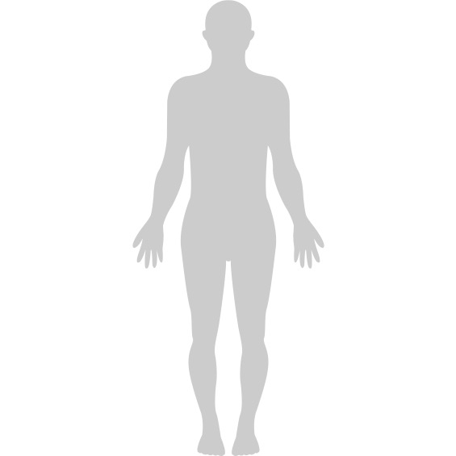

I work at the intersection of engineering and medicine —
designing, testing, and studying interventions that
restore function and improve the quality of clinical outcomes.

UCLA · 2025
Implantable prosthetic restoring opposition pinch. Published in npj Biomedical Innovation.
View project →Samsung · 2025
Clinical validation algorithm for blood pressure monitoring in wearables.
View project →Stanford · 2020–2022
DoD-funded longitudinal study on post-traumatic osteoarthritis following ACL injury.
View project →UCLA · 2025
Implantable prosthetic restoring opposition pinch. Published in npj Biomedical Innovation.
Samsung · 2025
Clinical validation algorithm for continuous blood pressure monitoring in wearable devices.
Stanford · 2020–2022
DoD-funded longitudinal study on post-traumatic osteoarthritis following ACL injury.